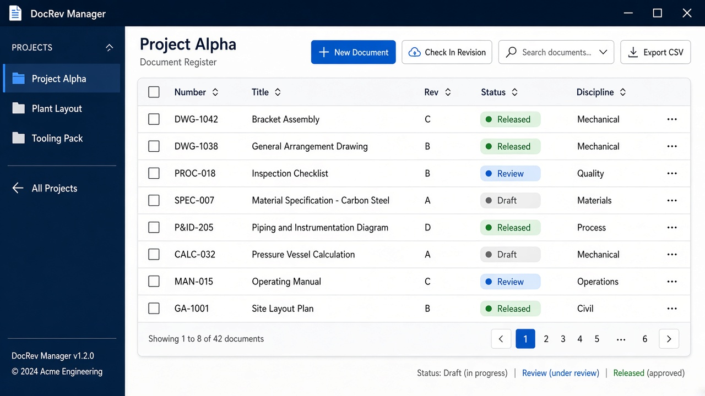

Watch on YouTube
DocRev Manager Demo
Watch product demos on our YouTube channel. Dedicated walkthrough videos are published there as they become available.
Watch on YouTubeDocument revision control software for Windows
DocRev Manager is offline Windows document control for design offices and manufacturers. Number drawings, vault every revision, print transmittals, and keep shop copies under control—without a cloud PLM.

Real app UI: project register, automatic numbering, Create document, Export CSV and local vault.
Watch product demos on our YouTube channel. Dedicated walkthrough videos are published there as they become available.
Watch on YouTubeKeep a clear current revision and optional shop-floor Released-only views.
Automatic document numbers with configurable project patterns.
Print a transmittal ZIP of the exact revisions you issued.
Separate documents by customer or job and open the project vault folder.
Create documents, import a drawing folder, track revisions and status.
Print a transmittal, use shop floor / job packet views, export CSV or back up the database.
Vault common engineering formats: PDF, AutoCAD DWG/DXF, Solid Edge DFT/PAR/ASM/PSM, STEP/STP, DOCX, XLSX, PNG, JPG and more. Files open in your installed applications — no built-in CAD viewer and no AutoCAD or Solid Edge add-in.
A maintained engineering document register with revisions, a local vault of controlled files, CSV export, database backup and optional transmittal ZIP packages.
Drawings live in shared folders with overlapping names, unclear latest revision and no proof of what was issued to the shop or vendor.
One offline Windows app holds projects, numbering, vaulted revisions, search, transmittals and CSV export.
Licensing is through Microsoft Store. Current offer and any trial appear on the Store product page for your market. Refunds follow Microsoft Store policy.
DocRev Manager is fully offline. Document files stay in a local vault on your PC; the app database and settings live under your Windows user profile. No cloud account is required. See our Privacy page. Questions: use the contact form.
Windows 10 version 1809 (build 17763) or later, or Windows 11. Keyboard and mouse. Install from Microsoft Store on a supported PC.
No. It is a Windows application for document numbering, revision tracking and a local vault. It is not a Teamcenter, Autodesk Vault or enterprise PLM replacement.
No. DWG/DXF and Solid Edge files are vaulted and open in your installed apps. There is no CAD add-in.
PDF, AutoCAD DWG/DXF, Solid Edge DFT/PAR/ASM/PSM, STEP/STP, DOCX, XLSX, PNG, JPG and other files you choose to vault.
Microsoft Store listing for DocRev Manager.